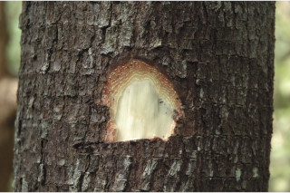
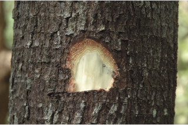
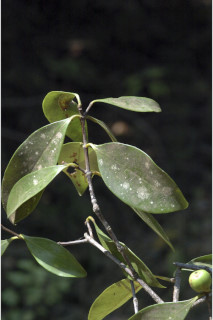
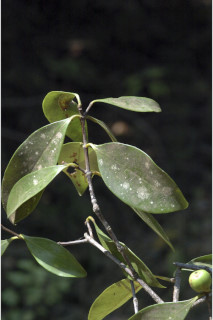
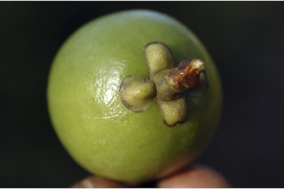
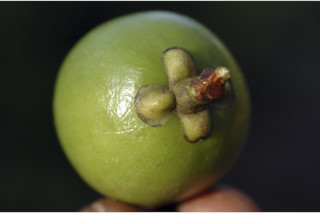

Small trees, up to 10 m tall.
10 ಮೀ ಎತ್ತರದವರೆಗೆ ಬೆಳೆಯುವ ಸಣ್ಣ ಮರಗಳು.
10 മീറ്റര് വരെ ഉയരത്തില് വളരുന്ന ചെറുമരങ്ങള്.
சிறிய மரம், 10 மீ. உயரம் வரை வளரக்கூடியது.
Bark light brown, smooth, fissured when old; blaze reddish.
ತೊಗಟೆ ತೆಳು ಕಂದು ಬಣ್ಣ,ನಯವಾದ ಮೇಲ್ಮೈ ಹೊಂದಿರುತ್ತದೆ; ಅತಿಬಲಿತ ತೊಗಟೆ ಸೀಳಿಕೆಗಳನ್ನು ಹೊಂದಿರುತ್ತದೆ; ಕಚ್ಚು ಮಾಡಿದ ಜಾಗ ಕೆಂಪಾಗಿರುತ್ತದೆ.
മൂക്കുമ്പോള് വിുകീറുന്നതും, ഇളം തവിട്ടുനിറത്തിലുള്ളതുമായ, മിനുസമാര്ന്ന പുറംതൊലി; വെട്ടുപാടിന് ചുവപ്പ് നിറം.
மரத்தின் பட்டை வெளிறிய ப்ரவுன் நிறமானது, வழுவழுப்பானது, முதிரும் போது பிளவுகளுடையது; உள்பட்டை சிவப்பானது.
Branches horizontal; branchlets opposite, subangular, glabrous.
ಕವಲುಗಳು ಅಡ್ಡವಾಗಿರುತ್ತವೆ;ಕಿರುಕೊಂಬೆಗಳು ಅಭಿಮುಖವಾಗಿ ಜೋಡಣೆಯಾಗಿದ್ದು,ಉಪ-ಕೋನಯುಕ್ತವಾಗಿದ್ದು ರೋಮರಹಿತವಾಗಿರುತ್ತವೆ.
തിരശ്ചീനമായ ശാഖകള്; സമ്മുഖവും ഉപകോണാകാരത്തിലുള്ളതും അരോമിലവുമായ ഉപശാഖകള്.
கிளைகள் தரை மட்டத்திற்கு இணையானது; சிறிய நுனிக்கிளைகள் எதிரடுக்கமானவை, குறுக்குவெட்டுத் தோற்றத்தில் சிறிது கோணங்கள் கொண்டவை, உரோமங்களற்றது.
Latex yellowish, profuse.
ಸಸ್ಯಕ್ಷೀರ ಹೇರಳವಾಗಿದ್ದು, ಹಳದಿ ಬಣ್ಣ ಹೊಂದಿರುತ್ತದೆ .
മഞ്ഞനിറത്തിലുള്ള സമൃദ്ധമായ സ്രവം.
சாறு மஞ்சள் நிறமானது, அதிகளவில் உண்டாகின்றன.
Leaves simple, opposite, decussate; petiole 0.7-1.5 cm long, planoconvex, glabrous, slightly sheathing at base; lamina 6-12 x 1.5-4.3 cm, narrow elliptic to narrow-obovate, apex obtuse or acute to slightly acuminate, base acute to attenuate, margin slightly repand, chartaceous to subcoriaceous, glabrous; secondary_nerves 4-7 pairs, with many intersecondary_nerves; tertiary_nerves obscure.
ಎಲೆಗಳು ಸರಳವಾಗಿದ್ದು,ಕತ್ತರಿಯಾಕಾರದ ಅಭಿಮುಖ ಜೋಡನಾ ವ್ಯವಸ್ಥೆಯಲ್ಲಿ-ರುತ್ತವೆ;ಎಲೆತೊಟ್ಟು 0.7 ರಿಂದ 1.5 ಸೆಂ.ಮೀ ಉದ್ದವಾಗಿದ್ದು, ಸಪಾಟ ಪೀನಮಧ್ಯ ಆಕಾರ ಹೊಂದಿದ್ದು ರೋಮರಹಿತವಾಗಿರುತ್ತದೆ ಹಾಗೂ ಬುಡಭಾಗದಲ್ಲಿ ಲಘುವಾದ ಒರೆಕೋಶ ಸಮೇತವಾಗಿರುತ್ತವೆ; ಎಲೆಪತ್ರಗಳು 6 -12 X 1.5 – 4.3 ಸೆಂ.ಮೀ ಗಾತ್ರ ಹೊಂದಿದ್ದು, ಸಂಕುಚಿತ ಅಂಡವೃತ್ತದಿಂದ ಸಂಕುಚಿತ ಬುಗುರಿಯಾ-ಕಾರದವರೆಗಿನ ಆಕಾರ ಹೊಂದಿರುತ್ತವೆ; , ಎಲೆತುದಿ ಚೂಪಲ್ಲದ ಅಥವಾ ಚೂಪು – ಕ್ರಮೇಣ ಚೂಪಾಗುವ ಮಾದರಿಯದಾಗಿರುತ್ತವೆ, ಎಲೆಯ ಬುಡ ಚೂಪಾದ ಅಥವಾ ಒಳಬಾಗಿದ ತಳವುಳ್ಳ ರೀತಿಯದಾಗಿರುತ್ತದೆ, ಎಲೆಯ ಅಂಚು ಲಘುವಾಗಿ ತರಂಗಿತ-ವಾಗಿರುತ್ತವೆ, ಎಲೆಗಳು ಕಾಗದವನ್ನೋಲುವ ಅಥವಾ ಉಪ ತೊಗಲನ್ನೋಲುವ ರೀತಿಯಲ್ಲಿದ್ದು ರೋಮರಹಿತ-ವಾಗಿರುತ್ತವೆ; ಎರಡನೇ ದರ್ಜೆಯ ನಾಳಗಳು 4 ರಿಂದ 7 ಜೋಡಿಗಳಿದ್ದು ಅನೇಕ ಅಂತರ-ಎರಡನೇದರ್ಜೆಯ ನಾಳಗಳ ಸಮೇತವಿರುತ್ತವೆ; ಮೂರನೇ ದರ್ಜೆಯ ನಾಳಗಳು ಅಸ್ಪಷ್ಟ.
സമ്മുഖ, ഡെക്കുസേറ്റ് ക്രമത്തിലുള്ള ലഘുപത്രങ്ങള്; ഇലഞെട്ടിന് 0.7 സെ.മി മുതല് 1.5 സെ.മി വരെ നീളവും, മുകള്ഭാഗം പരന്നതും കീഴ്ഭാഗം ഉരുതുമായ ഘടന, അരോമിലം, കീഴറ്റത്ത് ചെറുതായി ഉറയോട് കൂടിയതാണ്; പത്രഫലകത്തിന് 6 സെ.മി മുതല് 12 സെ.മി വരെ നീളവും 1.5 സെ.മി മുതല് 4.3 സെ.മി വരെ വീതിയും, വീതികുറഞ്ഞ-ദീര്ഘവൃത്തീയം തൊട്ട് വീതി കുറഞ്ഞ അപഅണ്ഡാകാരം വരെയും, പത്രാഗ്രം ഉപകോണാകാരമോ നിശിതമോ മുതല് ചെറുവാലോടുകൂടിയതോ ആണ്, പത്രാധാരം നിശിതം തൊട്ട് സാവധാനം നേര്ത്തവസാനിക്കുന്നതോ ആണ്, അരികുകള് സാവധാനം ചെറുതായി തരംഗിതമാണ്്, കടലാസ്പോലത്തെ പ്രകൃതമോ ഉപചര്മ്മില പ്രകൃതമോ, അരോമിലം; ധാരാളം അന്തര് ദ്വിതീയ ഞരമ്പുകള് ഉള്ള, 4 മുതല് 7 വരെ ജോഡി ദ്വിതീയ ഞരമ്പുകള്; ത്രിതീയ ഞരമ്പുകള്, അപ്രസക്തം.
இலைகள் தனித்தவை, எதிரடுக்கமானவை, குறுக்குமறுக்கமானவை; இலைக்காம்பு 0.7-1.5 செ.மீ. குறுக்குவெட்டுத் தோற்றத்தில் பிளேனோகான்வக்ஸ், உரோமங்களற்றது, தளத்தில் சிறிது உறை போன்றது; இலை அலகு 6-12 X 1.5-4.3 செ.மீ., குறுகிய நீள்வட்ட வடிவம் முதல் குறுகிய தலைகீழ் முட்டை வடிவம், அலகின் நுனி மழுங்கியது அல்லது கூரியது முதல் சிறிது அதிக்கூரியது, அலகின் தளம் கூரியது முதல் அட்டனுவேட், அலகின் விளிம்பு சிறிது அலைப்போன்றது (ரெப்பண்ட்), சார்ட்டேசியஸ், கீழ்பரப்பு உரோமங்களற்றது; இரண்டாம் நிலை நரம்புகள் 4-7 ஜோடிகள், அதிக நரம்புகள் இரண்டாம் நிலை நரம்புகளுகிடையே காணப்படுபவை; மூன்றாம் நிலை நரம்புகள் அற்றவை.
Flowers polygamodioecious, male flowers in axillary and terminal clusters; female flowers solitary, terminal or axillary.
ಗಂಡು ಮತ್ತು ಹೆಣ್ಣು ಹೂಗಳು ಪ್ರತ್ಯೇಕ ಸಸ್ಯಗಳಲ್ಲಿರುತ್ತವೆ; ಗಂಡು ಹೂಗಳು ಅಕ್ಷಾಕಂಕುಳಿನಲ್ಲಿರುವ ಮತ್ತು ತುದಿಯಲ್ಲಿರುವ ಗುಚ್ಛಗಳಲ್ಲಿರುತ್ತವೆ.; ಹೆಣ್ಣು ಹೂಗಳು ತುದಿಯಲ್ಲಿ ಅಥವಾ ಅಕ್ಷಾಕಂಕುಳಿನಲ್ಲಿ ಒಂಟಿಯಾಗಿರುತ್ತವೆ.
ആണ്-പെണ് പൂക്കള് വ്യത്യസ്ത മരങ്ങളിലുാകുന്നു, ആണ്പൂക്കള് കക്ഷീയവും ഉച്ഛസ്ഥവുമായ കൂട്ടങ്ങളായി ഉാകുന്നു; പെണ്പൂക്കള് ഉച്ഛസ്ഥമോ കക്ഷീയമോ ആയി ഒറ്റക്കായി ഉാകുന്നു.
மலர்கள் ஒர்பாலானவை, ஈரகம் கொண்டவை, ஆண்மலர்கள் இலைக்கோணங்களிலும் மற்றும் கிளையின் நுனியில் காணப்படுபவை; பெண்மலர்கள் தனித்தவை, தண்டின் நுனியில் அல்லது இலைக்கோணங்களில் காணப்படுபவை.
Berry globose, smooth; many seeded.
ಬೆರ್ರಿ ಗಳು ಗೋಳಾಕಾರದಲ್ಲಿದ್ದು, ಹಾಗೂ ನಯವಾದ ಮೇಲ್ಮೈ ಹೊಂದಿದ್ದು,ಅನೇಕ ಬೀಜಗಳನ್ನು ಒಳಗೊಂಡಿರುತ್ತವೆ.
കായ മിനുസമാര്ന്ന, ഗോളാകാര ബെറിയാണ്; ധാരാളം വിത്തുകള്.
முழுச்சதைகனி (பெர்ரி),கோளவடிவானது, வழுவழுப்பானது; அதிக விதையுடையது.

 



 

 
